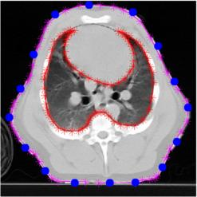
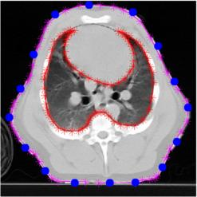
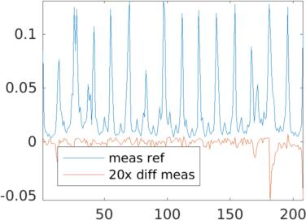
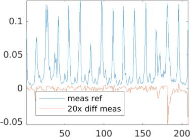

|
|
EIDORS: Electrical Impedance Tomography and Diffuse Optical Tomography Reconstruction Software |
|
EIDORS
(mirror) Main Documentation Tutorials − Image Reconst − Data Structures − Applications − FEM Modelling − GREIT − Old tutorials − Workshop Download Contrib Data GREIT Browse Docs Browse SVN News Mailing list (archive) FAQ Developer
Hosted by |
Modelling EIT in a pig shaped thorax modelThis example shows how EIDORS can by use Netgen to model the body shape of a pig and then use it to build a reconstruction algorithm and see the current flow in the body. For this exmample, you need at least Netgen version 4.9.13.Here are some examples of the varity of models which can be generated using the function: ng_mk_extruded_model.
Load thorax shape and identify contoursThis image is from a CT of a piglet with EIT electrodes, courtesy of Marc Bodenstein, Universität Mainz. Hand registered contours are available in this file [CT2.mat].
subplot(221);
load CT2.mat
img = imread('pig-thorax.jpg');
colormap(gray(256));
imagesc(-67+[1:371],25+[1:371],img);
hold on;
plot(372-trunk(:,1),trunk(:,2),'m*-');
plot(372-lung(:,1),lung(:,2),'r*-');
hh=plot(372-elec_pos(:,1),elec_pos(:,2), 'b.'); set(hh,'MarkerSize',20);
hold off
axis off; axis equal
print_convert pig_body01.jpg
% Shrink the model for the next step
trunk = trunk*.01;
lung = lung*.01; lung = flipud(lung(1:3:end,:)); % need counterclockwise shapes
elec_pos = elec_pos*.01;
  
Use Netgen to build a FEM model of the pig thorax
% Calculate electrode angles
pp= fourier_fit(trunk); sp = linspace(0,1,51);sp(end)=[]; centroid = mean(fourier_fit(pp, sp));
elec_pos = elec_pos - ones(size(elec_pos,1),1) * centroid;
electh= atan2(elec_pos(:,2),elec_pos(:,1))*180/pi; % electh=electh(1:3);
fmdl = ng_mk_extruded_model({2,{trunk, lung} ,[4,50],.1},[electh,1+0*electh],[0.1]);
[stim,meas_sel] = mk_stim_patterns(16,1,[0,1],[0,1],{'no_meas_current'}, 1);
fmdl.stimulation = stim;
fmdl.nodes = fmdl.nodes*diag([-1,-1,1]); % Flip x,y axis to match medical direction
img=mk_image(fmdl,1);
img.elem_data(fmdl.mat_idx{2})= 0.3;
clf; show_fem(img); view(0,70);
print_convert pig_body02.jpg

Simulate Voltage Distributionimg_v = img; % Stimulate between elecs 16 and 5 to get more interesting pattern img_v.fwd_model.stimulation(1).stim_pattern = sparse([16;5],1,[1,-1],16,1); img_v.fwd_solve.get_all_meas = 1; vh = fwd_solve(img_v); img_v = rmfield(img, 'elem_data'); img_v.node_data = vh.volt(:,1); img_v.calc_colours.npoints = 128; img_v.calc_colours.clim = 1.2; subplot(221); show_slices(img_v,[inf,inf,0.8]); axis off; axis equal print_convert pig_body03a.jpg show_slices(img_v,[inf,inf,1.0]); axis off; axis equal print_convert pig_body03b.jpg show_slices(img_v,[inf,inf,1.2]); axis off; axis equal print_convert pig_body03c.jpg Left to Right Voltage distribution in slices at z= 0.8, z= 1.0, z= 1.2. Current distributionimg_v = img; img_v.fwd_model.mdl_slice_mapper.npx = 64; img_v.fwd_model.mdl_slice_mapper.npy = 64; img_v.fwd_model.mdl_slice_mapper.level = [inf,inf,0.8]; show_current(img_v, vh.volt(:,1)); axis equal; axis tight; print_convert pig_body04a.jpg img_v.fwd_model.mdl_slice_mapper.level = [inf,inf,1.0]; show_current(img_v, vh.volt(:,1)); axis equal; axis tight; print_convert pig_body04b.jpg Left to Right Current distribution in slices at z= 0.8, z= 1.0. Current looks larger at z= 0.8, because each slice is individually normalized to the maximum Current distribution and streamlinesimg_v.fwd_model.mdl_slice_mapper.npx = 1000; img_v.fwd_model.mdl_slice_mapper.npy = 1000; img_v.fwd_model.mdl_slice_mapper.level = [inf,inf,1.0]; % Calculate at high resolution q = show_current(img_v, vh.volt(:,1)); % Lower resolution to visualize img_v.fwd_model.mdl_slice_mapper.npx = 64; img_v.fwd_model.mdl_slice_mapper.npy = 64; show_current(img_v, vh.volt(:,1)); sx =-centroid(1) - linspace(-1,1,15)'; sy =-centroid(2) + linspace(-1,1,15)'; hh=streamline(q.xp,q.yp, q.xc, q.yc,sx,sy); hh=streamline(q.xp,q.yp,-q.xc,-q.yc,sx,sy); axis equal; axis tight; print_convert pig_body05a.jpg Stream lines through z= 1.0. Streamlines and the original image
img = imread('pig-thorax.jpg');
colormap(gray(256));
imagesc(.01*([1:371]-438),.01*(-24-[1:371]),img);
set(gca,'YDir','normal');
hh=streamline(q.xp,q.yp, q.xc, q.yc,sx,sy); set(hh,'Linewidth',2);
hh=streamline(q.xp,q.yp,-q.xc,-q.yc,sx,sy); set(hh,'Linewidth',2);
axis equal; axis tight; axis off; print_convert pig_body06a.jpg
Stream lines through z= 1.0. 2D FEM model for image reconstruction
fmdlr = ng_mk_extruded_model({0,trunk,[4,50],.1},[0,0],[0.1]);
fmdlr.nodes = fmdlr.nodes*diag([-1,-1]);
show_fem(fmdlr); view(0,90);
print_convert pig_body07.jpg

Simulated conductivity change and simulated voltages (with noise)
img = mk_image( fmdl, 1 );
img.elem_data( fmdl.mat_idx{2} ) = 0.3;
vh= fwd_solve(img);
% Put a ball in the object center
targ= mk_c2f_circ_mapping(fmdl, [-2.2;-1.2;1;0.3]);
img.elem_data = img.elem_data + targ*.5;
show_fem(img); view(0,90);
print_convert pig_body08a.jpg
vi = fwd_solve(img);
vi = add_noise( 3, vi, vh );
plot([vh.meas, 20*(vi.meas - vh.meas)]);
axis tight;
legend('meas ref','20x diff meas','Location','SouthWest');
print_convert pig_body08b.jpg
  
Left Simulated conductivity change region Right Simulated voltage signals Reconstructions with simple and conforming modelsSimple 2D circular model reconstruction
imdl = mk_common_model('c2c2',16);
imdl.fwd_model.electrode = imdl.fwd_model.electrode([1,16:-1:2]);
imdl.fwd_model = mdl_normalize(imdl.fwd_model, 1);
imr= inv_solve(imdl, vh, vi);
clf
show_fem(imr); axis tight; axis off; axis equal
print_convert pig_body09a.jpg
Conforming model: 2D reconstructon with 3D forward model
cmdl.mk_coarse_fine_mapping.f2c_offset = [0,0,1];
cmdl.mk_coarse_fine_mapping.f2c_project = speye(3); % Scaling not required
cmdl.mk_coarse_fine_mapping.z_depth = 0.2;
c2f= mk_coarse_fine_mapping( fmdl, fmdlr);
imdl.name = 'CT pig 3D model';
imdl.fwd_model = fmdl;
imdl.rec_model = fmdlr;
imdl.fwd_model.coarse2fine = c2f;
imdl.jacobian_bkgnd.value = ones(size(fmdl.elems,1),1);
imdl.jacobian_bkgnd.value( fmdl.mat_idx{2} ) = 0.3;
imdl.fwd_model = mdl_normalize(imdl.fwd_model, 1);
imdl.hyperparameter.value = .03;
% Model background conductivity as lung
imr= inv_solve(imdl, vh, vi);
show_fem(imr); axis off ; axis tight
print_convert pig_body10a.jpg
 
Left Simple 2D circular model reconstruction Right 2D reconstructon with conforming 3D forward model |
Last Modified: $Date: 2017-02-28 13:21:02 -0500 (Tue, 28 Feb 2017) $ by $Author: aadler $